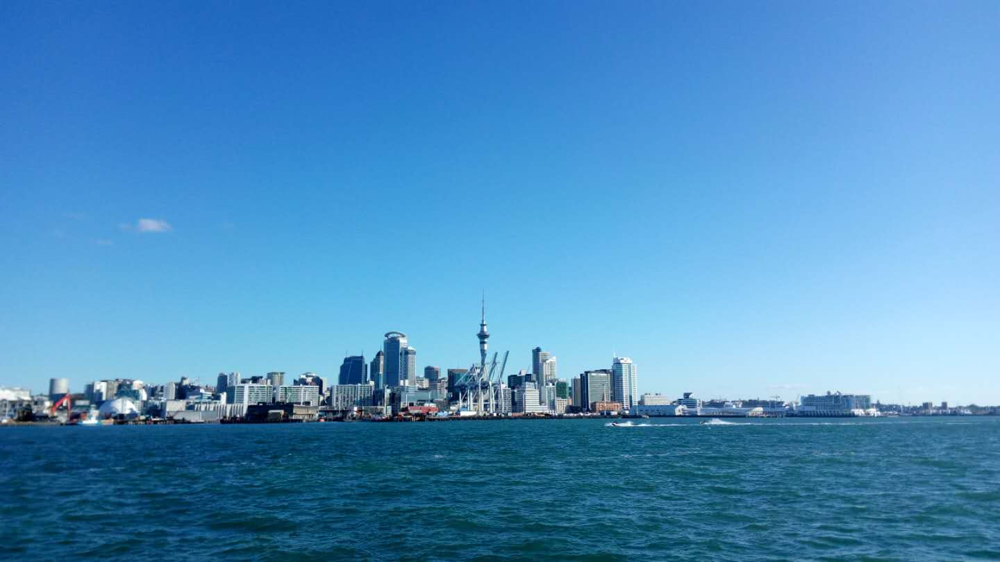

| Geog 771 Name:Zhenxiong Niu UOA：437855855 Email:zniu407@auckland.ac.nz |
 |
|||||||
|
new zealand's great walks:mapbox studio
new zealand's great walks:mapbox studio
& mapbox gl js (zoom in to see all 9 walks)
|